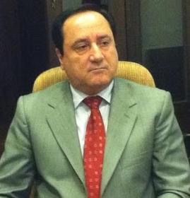
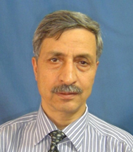
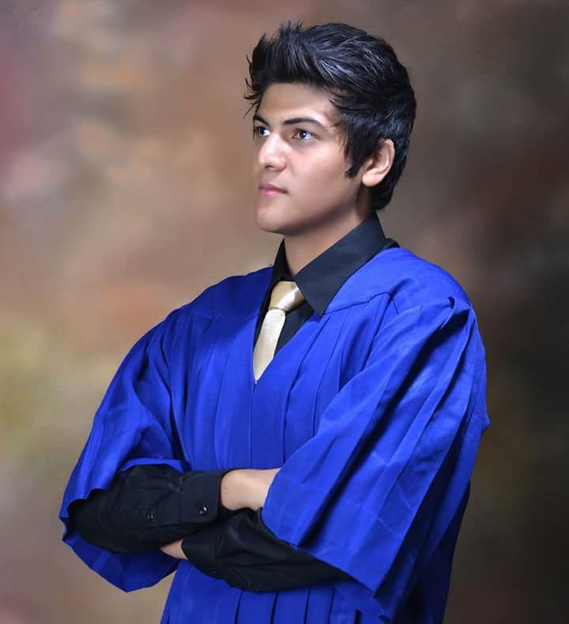
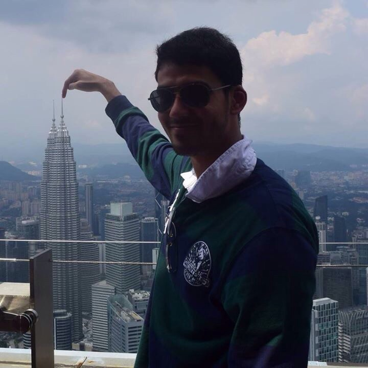
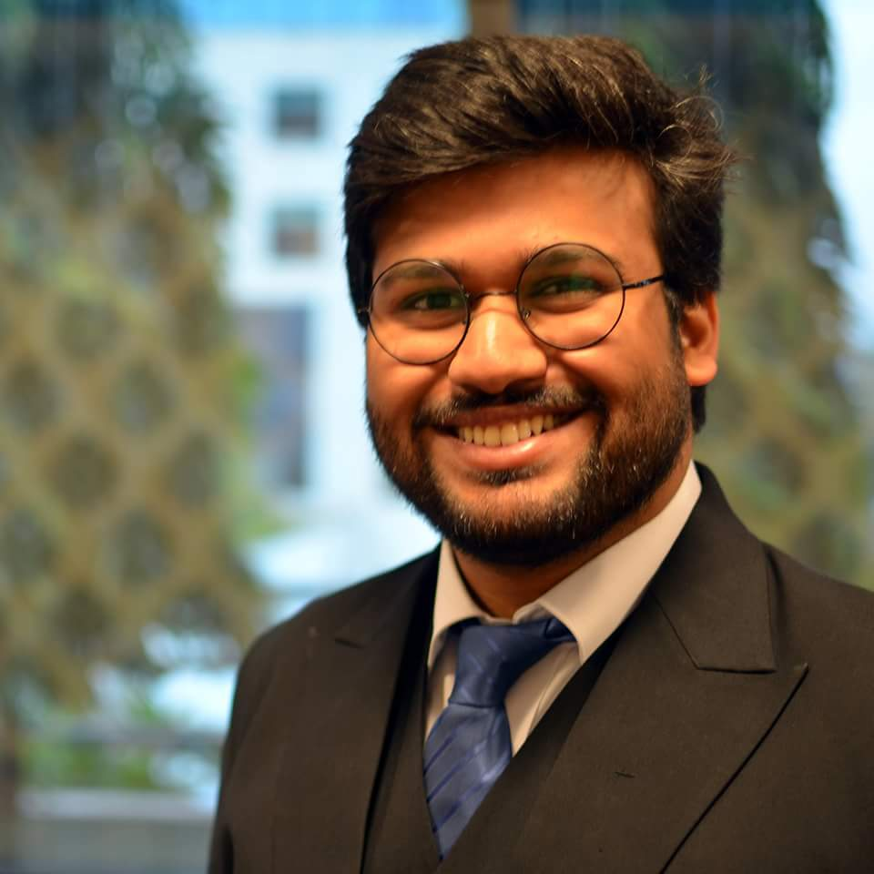
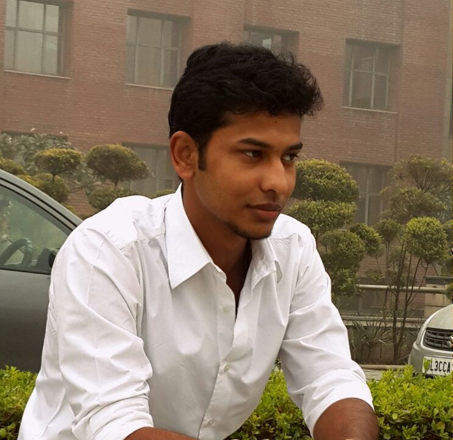

Advisory board AMIMUN'16
Ms. Homaira Ayubi

Member of Parliament of the Islamic Republic of Afghanistan
Wolesi Jirga (House of the People)
After the policies of the powerful today have failed us for generations, it is very humbling to see the youth of today coming together to deliberate upon the problems that plague mankind. It is through events such as this that the leaders of tomorrow come forth. My best wishes are with AMIMUN '16 with optimism that tomorrow, these young ladies and gentlemen will change the course of mankind for the better.
Dr. Riad Abbas

Ambassador of the Syrian Arab Republic
We should start believing in the power of the youth and their ability of leadership because they will be taking forth the world's aspirations for a safer and a better world that is war free. Therefore we appreciate this program that helps in building the young leaders of the future world.
Prof. A.K.Rashid

Visiting Faculty from Kabul University for the Center for Persian and Central Asian Studies
I am elated to know about AMIMUN 2016. I would like to appreciate your great work for the Amity Model United Nations Conference. I would also like to congratulate your Amity family for completing 5 years of this great debating forum. For me, as a professor and diplomat and supervisor of 15,000 Afghan students all over India, it’s clear that they all have been inclusive in India and its quality education. I am sure these kind activities will be a great source of learning and getting to know each other. I would also serve as a great platform for great exchange ideas and opinions on issues that concern the world. In our Afghan language a couplet says: HAR KI MAKTAB RAFT ADAM MESHAWD NORE CHASHME KHALQE ALAM MEHAWD . Everyone who is going to school wants to learn humanity. He /she serve as the eyes of the people all over the universe . So, all must learn and learn from Cradle to Grave. My gratitude to the team of AMIMUN and Amity University for letting me be a part of this great initiative. I wish you all the very best for the same.
Samuel Akorimo
Branch Head, United Nations Mechanism for International Criminal Tribunals,
Arusha Branch, Tanzania
It gives me hope to see that we are living in a world where young boys and girls are concerned with the issues of today. I bless AMIMUN '16 and wish that the next generation can assuage the moral depravity that the politicians of the past have put us in.
Dina Bouchkouch
Bordeaux Montaigne University (France)
MUN is the occasion to live the amazing experience of representing a country in a truly international and multicultural environment, debating over hot topics of the current geopolitical agenda, learning to negotiate and compromise to reach consensus, making new friends. No one needs to be a professional of the international relations, or on diplomacy, it is all about learning. Today you might be delegates in your College, you’re learning, getting familiar with the concept, its rules, but who knows maybe tomorrow you will be sitting in New-York or Geneva at the UN’s headquarters, small steps guide you to higher places. AMIMUN’16 is your opportunity to learn how to be a delegate and to feel the atmosphere of a MUN. Being helped, supported and surrounded by the AMITY‘s team, which this year is organizing its 5th MUN but also boosted by Indonesia MUN and Young Leaders' Consortium.
Suhail Prasathong

Rochester Institute of Technology, United States of America
The power of the Model United Nations program can be underestimated at times. Most students who participate look at it as a “mock” United Nations conference, which, at face value might be true. This goes to show that the platform MUN provides to students all around the world is unparalleled. The opportunity to speak your mind through rigorous research and analysis allows the individual to grow not just academically or intellectually but as a human being.
Sunit Chatterjee

Murdoch University, Australia
The UN is a key platform to address global problems such as climate control, economic crisis and war, to promote dialogue and understanding. I hope AMIMUN ’16 can successfully touch upon these topics and bring about new perspectives. Model United Nations is indeed a tool that youth can utilize to propel society in the right direction.
Aamir Ahmed

Amity University, India
My journey with MUNs began with AMIMUN 2011, and since then there's been no looking back. I consider it an honor to be a part of AMIMUN 2016 as an Advisor. I'm really proud how AMIMUN has become a legacy which has always strived to introduce new ideas, in the form of unconventional committees, which in turn open up an entirely new side of role-based debating. I've been associated with AMIMUN as a delegate, a member of the Executive Board, and as a member of the advisory board, and thus, I can confidently say that AMIMUN has been growing with each year, ever since its inception. I'm really excited about AMIMUN 2016 as I'll be chairing the Organization of Islamic Cooperation, and I'm confident this MUN is going to be an absolutely delightful experience for everyone. Cheers!
Satrajit Sahani

Amity University, India
Now in its fifth year, AMIMUN has grown leaps and bounds from its humble beginnings in 2011. Delegates from all over India and abroad, will engage in well-directed debates in any one of our seven committees which are being simulated this year. I expect AMIMUN 2016 to leave a lasting impression on your hearts and minds long after the conference comes to an end. It is indeed my honour and privilege to welcome you all to the 5th edition of Amity International Model United Nations Conference 2016